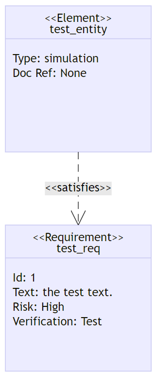

关于mermaid
Mermaid 可让您使用文本和代码创建图表和可视化效果。
它是一种基于 Javascript 的图表和图表工具，可呈现受 Markdown 启发的文本定义以动态创建和修改图表。
现已在大量支持markdown语法的程序中得到支持，包括Obsidian和Hugo。
如果您熟悉 Markdown，那么学习Mermaid’s Syntax 应该没有问题。
流程图
基本流程图
1
2
3
4
5
graph TD;
A-->B;
A-->C;
B-->D;
C-->D;
方向
可能的流程图方向是：
TB/TD - 从上到下
BT - 自下而上
RL - 从右到左
LR - 从左到右
更多形状
节点形状、条件
1
2
3
4
5
6
graph LR
A[方形] -->B(圆角)
B --> C{条件a}
C -->|a=1| D[结果1]
C -->|a=2| E[结果2]
F[横向流程图]
子图
1
2
3
4
5
6
7
8
9
10
11
flowchart TB
c1-->a2
subgraph one
a1-->a2
end
subgraph two
b1-->b2
end
subgraph three
c1-->c2
end
完整文档
饼图
1
2
3
4
5
6
pie
title Key elements in Product X
"Calcium" : 42.96
"Potassium" : 50.05
"Magnesium" : 10.01
"Iron" : 5
状态图
“状态图是一种用于计算机科学和相关领域的图，用于描述系统的行为。状态图要求所描述的系统由有限数量的状态组成；有时情况确实如此，而在其他情况下有时这是一个合理的抽象。” ——维基百科
基本状态图
1
2
3
4
5
6
7
8
stateDiagram-v2
[*] --> Still
Still --> [*]
Still --> Moving
Moving --> Still
Moving --> Crash
Crash --> [*]
层级
1
2
3
4
5
6
7
8
9
10
stateDiagram
direction LR
[*] --> A
A --> B
B --> C
state B {
direction LR
a --> b
}
B --> D
选择
有时您需要对两个或多个路径之间的选择进行建模，您可以使用 <<choice>> 来实现。
1
2
3
4
5
6
stateDiagram-v2
state if_state <<choice>>
[*] --> IsPositive
IsPositive --> if_state
if_state --> False: if n < 0
if_state --> True : if n >= 0
便利贴
有时，没有什么比便利贴更能说明问题了。在状态图中也是如此。
在这里您可以选择将注释放在节点的右侧或左侧。
1
2
3
4
5
6
7
8
stateDiagram-v2
State1: The state with a note
note right of State1
Important information! You can write
notes.
end note
State1 --> State2
note left of State2 : This is the note to the left.
完整文档
甘特图
甘特图是一种条形图，由 Karol Adamiecki 于 1896 年首次开发，1910 年代由 Henry Gantt 独立开发，用于说明项目进度和完成任何项目所需的时间。甘特图说明项目的终端元素和摘要元素的开始日期和完成日期之间的天数。
甘特图将每个计划任务记录为一个从左向右延伸的连续条。x 轴代表时间，y 轴记录不同的任务及其完成的顺序。
重要的是要记住，当特定于任务的日期、日期或日期集合被“排除”时，甘特图将通过向右扩展相同的天数来适应这些更改，而不是通过在内部创建间隙任务。
但是，如果排除的日期在两个设置为连续开始的任务之间，则排除的日期将被图形跳过并留空，并且在排除的日期结束后将开始下一个任务。
甘特图可用于跟踪项目完成前所需的时间，但它也可用于以图形方式表示“非工作日”，只需稍作调整。
Mermaid 可以将甘特图呈现为 SVG、PNG 或可以粘贴到文档中的 MarkDown 链接。
基本甘特图
1
2
3
4
5
6
7
8
9
gantt
title A Gantt Diagram
dateFormat YYYY-MM-DD
section Section
A task :a1, 2021-01-01, 30d
Another task :after a1 , 20d
section Another
Task in sec :2021-01-12 , 12d
another task : 24d
语法
1
2
3
4
5
6
7
8
9
10
11
12
13
14
15
16
17
18
19
20
21
22
23
24
25
26
27
28
29
gantt
dateFormat YYYY - MM - DD
title Adding GANTT diagram functionality to mermaid
excludes weekends
%% ( ` excludes ` accepts specific dates in YYYY - MM - DD format , days of the week ( "sunday" ) or "weekends" , but not the word "weekdays" .)
section A section
Completed task : done , des1 , 2014 - 01 - 06 , 2014 - 01 - 08
Active task : active , des2 , 2014 - 01 - 09 , 3 d
Future task : des3 , after des2 , 5 d
Future task2 : des4 , after des3 , 5 d
section Critical tasks
Completed task in the critical line : crit , done , 2014 - 01 - 06 , 24 h
Implement parser and jison : crit , done , after des1 , 2 d
Create tests for parser : crit , active , 3 d
Future task in critical line : crit , 5 d
Create tests for renderer : 2 d
Add to mermaid : 1 d
section Documentation
Describe gantt syntax : active , a1 , after des1 , 3 d
Add gantt diagram to demo page : after a1 , 20 h
Add another diagram to demo page : doc1 , after a1 , 48 h
section Last section
Describe gantt syntax : after doc1 , 3 d
Add gantt diagram to demo page : 20 h
Add another diagram to demo page : 48 h
完整文档
更多图表
时序图
时序图是一种交互图，它显示了进程如何相互操作以及以何种顺序运行。
1
2
3
4
sequenceDiagram
Alice->>John: Hello John, how are you?
John-->>Alice: Great!
Alice-)John: See you later!
完整文档
类图
“在软件工程中，统一建模语言（UML）中的类图是一种静态结构图，它通过显示系统的类、它们的属性、操作（或方法）以及对象之间的关系来描述系统的结构.” ——维基百科
1
2
3
4
5
6
7
8
9
10
11
12
13
14
15
16
17
18
19
20
21
classDiagram
Animal <|-- Duck
Animal <|-- Fish
Animal <|-- Zebra
Animal : +int age
Animal : +String gender
Animal: +isMammal()
Animal: +mate()
class Duck{
+String beakColor
+swim()
+quack()
}
class Fish{
-int sizeInFeet
-canEat()
}
class Zebra{
+bool is_wild
+run()
}
完整文档
实体关系图
实体-关系模型（或 ER 模型）描述了特定知识领域中的相关事物。基本 ER 模型由实体类型（对感兴趣的事物进行分类）组成，并指定实体（这些实体类型的实例）之间可以存在的关系。——维基百科
1
2
3
4
erDiagram
CUSTOMER ||--o{ ORDER : places
ORDER ||--|{ LINE-ITEM : contains
CUSTOMER }|..|{ DELIVERY-ADDRESS : uses
完整文档
用户旅程图
用户旅程高度详细地描述了不同用户在系统、应用程序或网站中完成特定任务所采取的具体步骤。此技术显示当前（原样）用户工作流程，并揭示未来工作流程的改进领域。——维基百科
1
2
3
4
erDiagram
CUSTOMER ||--o{ ORDER : places
ORDER ||--|{ LINE-ITEM : contains
CUSTOMER }|..|{ DELIVERY-ADDRESS : uses
完整文档
需求图
需求图提供了需求及其相互之间和其他文档化元素之间的联系的可视化。建模规范遵循 SysML v1.6 定义的规范。

需求图
1
2
3
4
5
6
7
8
9
10
11
12
13
14
requirementDiagram
requirement test_req {
id: 1
text: the test text.
risk: high
verifymethod: test
}
element test_entity {
type: simulation
}
test_entity - satisfies -> test_req
完整文档
适用于在Obsidian打开的本文章md文件
下载地址 (请自行删除后缀名.save)

{kind=link}